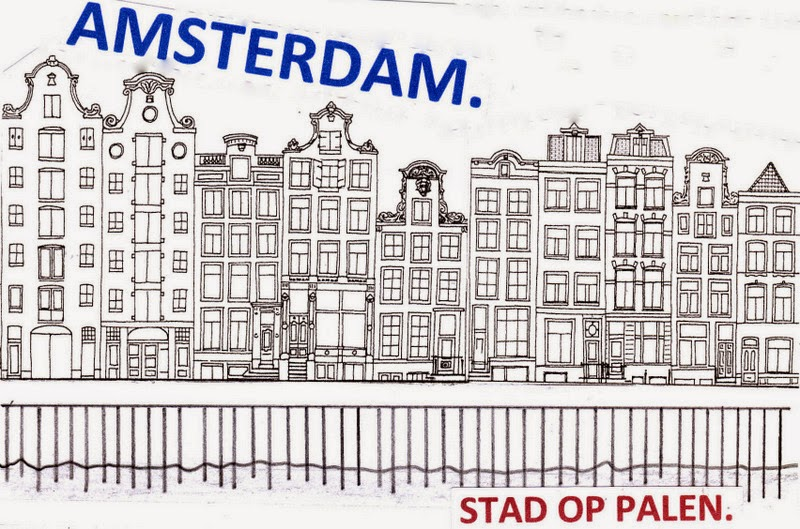

2025-07-14
July Update
Hi Polderaars!
Here's another fresh polder update! The weather's getting pretty muggy, but that's not stopping us from steadily grinding away on this awesome passion project:
POLDERVLOG
Guys, we finally made a personal vlog! 🎬 This is really where it all started - our pure love for the Netherlands and our crazy obsession with windmills and dikes. Here's the link.
Villagers & Automation
The automation system is finally starting to take shape and man, this is so much fun to play with.
Your villagers aren't boring NPCs just wandering around anymore - nope, these guys have WORK to do! They sail back and forth with barges, operate windmills (that actually work btw!), haul goods around, and keep an eye on your dikes. Because yeah, if your dikes fail...


Shading
This month we really went deep on the visual side of the game.
We want POLDERS to look like Van Ruisdael and Vermeer themselves were the art directors. No joke! Those Dutch masters really understood what our landscape looks like - that vastness, that light, those typical Dutch clouds.
So we're staying up late into the night messing around with grass shaders and vegetation rendering. The goal? That you really feel like you're walking around in a 17th-century Dutch landscape. With meadows that look nice and green, grass that moves in the wind, and that characteristic Dutch light.


Did you know...
That peat soil is horrible to build on? Yet practically a fourth of the Netherlands is built on top of this swampy stuff, including Amsterdam!
Picture this: you want to build a house, but the ground is as soft as a water-soaked sponge. Your house just sinks away! Or tilts. Or both. That's exactly why our ancestors had to get so creative. Ramming wooden piles into the ground, and keeping the water level just right. And that in the 17th century!
Try building a windmill on bad ground - then you'll quickly learn why the Netherlands got so good at "how to build something that doesn't fall over". It's not for nothing that we're worldwide experts in difficult construction projects. We HAD to get good, otherwise we would've literally sunk!

2025-07-14
Juli Update
Hi Polderaars!
Hier weer een nieuwe polderupdate! Het weer is lekker broeierig, maar dat weerhoudt ons niet van steady doorknokken aan dit heerlijke passieproject:
POLDERVLOG
Guys, we hebben eindelijk een persoonlijke vlog gemaakt! 🎬 Dit is echt waar het allemaal begon - onze pure liefde voor Nederland en onze gekke obsessie met molens en dijken. Hier is de link.
Villagers & Automatisering
Het automatiseringssysteem begint eindelijk vorm te krijgen en man, wat is dit leuk om mee te spelen.
Je villagers zijn geen saaie NPC's meer die maar wat rondlopen - nee, deze gasten hebben WERK te doen! Ze varen met trekschuiten heen en weer, draaien aan windmolens (die echt werken trouwens!), sjouwen met goederen, en houden je dijken in de gaten. Want ja, als je dijken het begeven...
Shading
Deze maand zijn we echt diep gegaan op de visuele kant van het spel.
We willen dat POLDERS eruitziet alsof Van Ruisdael en Vermeer zelf de art director waren. Geen grapje! Die Nederlandse meesters hadden echt door hoe ons landschap eruitziet - die weidsheid, dat licht, die typische Nederlandse wolken.
Dus we zitten nu tot diep in de nacht te klooien met grass shaders en vegetatie rendering. Het doel? Dat je echt het gevoel hebt dat je in een 17e-eeuws Nederlands landschap rondloopt. Met weilanden die er lekker groen uitzien, gras dat beweegt in de wind, en dat karakteristieke Nederlandse licht.
Wist je dat...
veengrond echt niet chill is om op te bouwen? Toch staat zo'n beetje een kwart van Nederland op dit moerassige spul, inclusief Amsterdam!
Stel je voor: je wilt een huis bouwen, maar de grond is zo zacht als een spons vol water. Je huis zakt gewoon weg! Of wordt scheef. Of allebei. Dat is precies waarom onze voorouders zo creatief moesten worden. Houten palen de grond in rammen, en het waterpeil precies goed houden. En dat in de 17e eeuw!
Probeer maar eens een molen te bouwen op slechte grond - dan leer je snel waarom Nederland zo goed is geworden in "hoe bouw je iets dat niet omvalt". Het is niet voor niks dat wij wereldwijd de experts zijn in moeilijke bouwprojecten. We MOESTEN wel goed worden, anders waren we letterlijk weggezonken!